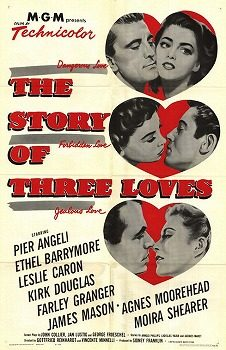

THE STANFORD THEATRE
Now Showing
·
Upcoming
·
Past
·
Search
June 27 - August 25, 2024
Directed by Vincente Minnelli
13 bills
June 27 - 30
Meet Me in St. Louis (1944)
113 min
The Clock (1945)
90 min
July 4 - 5
The Long Long Trailer (1954)
103 min

The Story of Three Loves (1953)
122 min
July 6 - 7
Cabin in the Sky (1943)
98 min
Yolanda and the Thief (1945)
108 min
July 11 - 14
Father of the Bride (1950)
92 min
Father's Little Dividend (1951)
82 min
July 18 - 19
The Pirate (1948)
102 min
Undercurrent (1946)
116 min
July 20 - 21
The Bad and the Beautiful (1952)
116 min
Two Weeks in Another Town (1962)
107 min
July 25 - 28
An American in Paris (1951)
108 min
Madame Bovary (1949)
106 min
August 1 - 2
The Cobweb (1955)
124 min
Kismet (1955)
113 min
August 3 - 4
The Band Wagon (1953)
113 min
Brigadoon (1954)
108 min
August 8 - 11
Gigi (1958)
119 min
The Reluctant Debutante (1958)
94 min
August 15 - 16
Tea and Sympathy (1956)
122 min
Designing Woman (1957)
118 min
August 17 - 18
Lust for Life (1956)
122 min
The Sandpiper (1965)
110 min
August 22 - 25
Bells Are Ringing (1960)
127 min
Some Came Running (1958)
137 min
Archived
•
StanfordTheatre.org Original